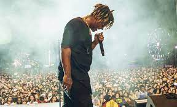

Jarad Anthony Hggins

Juice wrld on stage performing his songs to his funs in early 2019
Here is a timeline of Jarads life
- 1998
Jarad Anthony Hggins was born on the 2nd of december 1998 in Chicago, Illinois. He grew up in South Suburbs and later on moved to Homewood where he attended Homewood-Flossmoor High School and graduated in 2017. - 2015-2017: Beginnings, record deal, and early projects
JHiggins developed as an artist in his first year of high school. His first track, "Forever", was released on SoundCloud in 2015 under the name JuicetheKidd. Higgins recorded most of his first tracks on a cellphone, uploading them to SoundCloud in his sophomore year.[16] He changed his name from JuicetheKidd, a name inspired by his affection for rapper Tupac Shakur's role in the film Juice, to Juice Wrld because he and his associates believed the change would benefit his career - 2017-2018: Goodbye & Good Riddance and WRLD Domination Tour
In December 2017, Higgins released the three-song EP Nothings Different. The project was covered by the hip-hop blog Lyrical Lemonade,[25] with Higgins' track "All Girls Are the Same" gaining popularity through the blog post. An accompanying Cole Bennett-directed music video was released in February 2018.[21] Following the video's release, Interscope Records signed Higgins for $3 million[26] and a remix featuring Lil Yachty was previewed but never officially released.[27] "All Girls Are the Same" was critically acclaimed, receiving a Best New Music designation from Pitchfork.[28] It was released as a single in April. "All Girls Are the Same" and "Lucid Dreams" were Higgins' first entries on any Billboard chart, debuting on the Hot 100 at numbers 92 and 74, respectively.[29][30]. - 2018-2019: Wrld on Drugs and Death Race for Love
Travis Scott's song "No Bystanders", from his third studio album, Astroworld, featured Higgins and Sheck Wes. The song peaked at number 31 on the Billboard Hot 100.[44][45][46] Higgins made his late night television debut performing the song "Lucid Dreams" on Jimmy Kimmel Live! on August 8, 2018.[47] On October 15, the music video for the song "Armed and Dangerous" was released[48] followed by the lead single, "Fine China", from the collaborative mixtape, Wrld on Drugs with Future.[49] Epic Records released the mixtape on October 19. - 2020: Legends Never Die and various singles
Jarad Anthony Hggins was born on the 2nd of december 1998 in Chicago, Illinois. He grew up in South Suburbs and later on moved to Homewood where he attended Homewood-Flossmoor High School and graduated in 2017. - 2020 december 8th he secumed to od
“I feel as though, if you are able to control your dreams, you have more power and control over your mind, like you could reach more areas of your mind. Therefore, I feel like it creates the ability for you to achieve more things in reality.
if you have time, you should read more about this incrdible human being on his Wikipedia entry